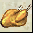

Consumables
This is a list of consumable items in the game, which consist mainly of medicines and food. Some of the items in this list may not be available, and it's also likely that the brewing recipes for the higher end items (which can only be obtained through brewing) are locked.
| Medicines | |||||
|---|---|---|---|---|---|
| Name | Type | Description | Level | Location | |
 |
Lesser Curing | Medicine | Heals 200 HP | 1 | Starter, SH, ND |
|
Major Healing | Medicine | Heals 240HP | 16 | Starter, SM |
| Minor Curing | Medicine | Heals 260HP | 21 | Starter, Clan Maps, Clan HQs | |
| Curing | Medicine | Heals 360HP | 26 | Starter, Clan Maps, Clan HQs | |
| Major Curing | Medicine | Heals 460HP | 31 | Clan Maps, Clan HQs, LOB/LOG Towns | |
| Greater Curing | Medicine | Heals 560HP | 36 | Clan Maps, Clan HQs, LOB/LOG Towns | |
| Supreme Curing | Medicine | Heals 660 HP | 41 | Bu, LOB/LOG Towns, QL, SH, NA, ND-BM* | |
| Minor Healing | Medicine | Heals 760 HP | 46 | Bu, LOB/LOG Towns, QL, SH, NA, ND-BM* | |
| Lesser Healing | Medicine | Heals 960 HP | 51 | Bu, XT, YC, LL, QL, SH, NA, ND, TYC, HW | |
| Healing | Medicine | Heals 1160 HP | 56 | Bu, XT, YC, LL, NA, ND, BL, SM, YM, TYC, HW | |
| Minor Recovery | Medicine | Heals 1500HP | 66 | Starter, YM | |
| Lesser Recovery | Medicine | Heals 2000HP | 71 | Starter | |
| Recovery | Medicine | Heals 2500HP | 81 | Starter | |
| Major Recovery | Medicine | Heals 3000HP | 91 | Starter | |
| Super Recovery | Medicine | Heals 3500HP | 99 | Starter | |
| Greater Healing | Medicine | Heals 10% of Max HP | 61 | Bu, TYC, HW, SH-WM* | |
| Supreme Healing | Medicine | Restores 20% of Max HP | 66 | BL, SM, YM | |
| Minor Life Elixir | Medicine | Heals 30% of Max HP | 71 | Brewing | |
| Lesser Life Elixir | Medicine | Heals 40% of Max HP | 76 | Brewing | |
| Life Elixir | Medicine | Heals 50% of Max HP | 81 | Brewing | |
| Major Life Elixir | Medicine | Heals 60% of Max HP | 86 | Brewing | |
| Greater Life Elixir | Medicine | Heals 70% of Max HP | 91 | Brewing | |
| Lesser Energy | Medicine | Restores 200 Chi | 1 | Starter | |
| Major Chi | Medicine | Restores 240 Chi | 16 | YM | |
| Minor Energy | Medicine | Restores 260 Chi | 21 | Clan Maps, Clan HQs | |
| Energy | Medicine | Restores 360 Chi | 26 | Clan Maps, Clan HQs | |
| Major Energy | Medicine | Restores 460 Chi | 31 | Clan Maps, Clan HQs, LOB/LOG Towns | |
| Greater Energy | Medicine | Restores 560 Chi | 36 | Clan Maps, Clan HQs, LOB/LOG Towns | |
| Supreme Energy | Medicine | Restores 660 Chi | 41 | Bu, LOB/LOG Towns, QL, SH, NA, ND-BM* | |
| Minor Chi | Medicine | Restores 760 Chi | 46 | Bu, LOB/LOG Towns, QL, SH, ND-BM* | |
| Lesser Chi | Medicine | Restores 960 Chi | 51 | Bu, XT, YC, LL, QL, SH, NA, TYC, HW | |
| Chi | Medicine | Restores 1160 Chi | 56 | Bu, XT, YC, LL, BL, YM, ND, TYC, HW | |
| Minor Revitalization | Medicine | Heals 1500 Chi | 66 | Starter, SM | |
| Lesser Revitalization | Medicine | Restores 2000 Chi | 71 | Starter | |
| Revitalization | Medicine | Restores 2500 Chi | 81 | Starter | |
| Major Revitalization | Medicine | Restores 3000 Chi | 91 | Starter | |
| Super Revitalization | Medicine | Restores 3500 Chi | 99 | Starter | |
| Greater Chi | Medicine | Restores 10% of Max Chi | 61 | Bu, SH-WM* | |
| Supreme Chi | Medicine | Restores 20% of Max Chi. | 66 | SM | |
| Minor Chi Elixir | Medicine | Restores 30% of Max Chi | 71 | Brewing | |
| Lesser Chi Elixir | Medicine | Restores 40% of Max Chi | 76 | Brewing | |
| Chi Elixir | Medicine | Restores 50% of Max Chi | 81 | Brewing | |
| Major Chi Elixir | Medicine | Restores 60% of Max Chi | 86 | Brewing | |
| Greater Chi Elixir | Medicine | Restores 70% of Max Chi | 91 | Brewing | |
|
Minor Restoration | Medicine | Heals 10 HP, Restores 10 Chi | 1 | Brewing |
|
Lesser Restoration | Medicine | Heals 20 HP, Restores 20 Chi | 11 | Brewing |
|
Restoration | Medicine | Heals 30 HP, Restores 30 Chi | 21 | Brewing |
|
Major Restoration | Medicine | Heals 50 HP, Restores 50 Chi | 31 | Brewing |
|
Greater Restoration | Medicine | Heals 80 HP, Restores 80 Chi | 41 | ND-BM* |
|
Supreme Restoration | Medicine | Heals 120 HP, Restores 120 Chi | 51 | ND-BM* |
|
Minor Rejuvenation | Medicine | Heals 300 HP, Restores 300 Chi | 61 | Brewing |
|
Lesser Rejuvenation | Medicine | Heals 10% of Max HP, Restores 10% of Max Chi | 71 | Brewing |
|
Rejuvenation | Medicine | Heals 20% of Max HP, Restores 20% of Max Chi | 81 | Brewing |
|
Major Rejuvenation | Medicine | Heals 40% of Max HP, Restores 40% of Max Chi | 91 | Brewing |
| Weak Striking | Medicine | AR +10 (for 60 sec) | 1 | Starter | |
| Weak Striking | Medicine | AR +20 (for 60 sec) | 11 | Starter | |
| Lesser Striking | Medicine | AR +30 (for 60 sec) | 21 | Clan Maps, Clan HQs | |
| Lesser Striking | Medicine | AR +40 (for 60 sec) | 31 | Clan Maps, Clan HQs, LOB/LOG Towns | |
| Medium Striking | Medicine | AR +50 (for 60 sec) | 41 | Bu, LOB/LOG Towns, QL, SH, ND-BM* | |
| Medium Striking | Medicine | AR +60 (for 60 sec) | 51 | Bu, XT, YC, LL, QL, SH, TYC, HW, ND-BM* | |
| Greater Striking | Medicine | AR +70 (for 60 sec) | 61 | XT, YC, LL, NA, ND, TYC, HW | |
| Striking | Medicine | AR +80 (for 60 sec) | 71 | BL | |
| Ultimate Striking | Medicine | AR +90 (for 60 sec) | 81 | BL, TYC, HW | |
| Ultimate Striking | Medicine | AR +100 (for 60 sec) | 91 | Brewing | |
| Striking | Medicine | AR +50% (for 60 sec) | 20 | YM | |
 |
Weak Dodging | Medicine | DR +10 (for 60 sec) | 1 | Starter |
|
Weak Dodging | Medicine | DR +20 (for 60 sec) | 11 | Starter |
|
Lesser Dodging | Medicine | DR +30 (for 60 sec) | 21 | Clan Maps, Clan HQs |
|
Lesser Dodging | Medicine | DR +40 (for 60 sec) | 31 | Clan Maps, Clan HQs, LOB/LOG Towns |
|
Medium Dodging | Medicine | DR +50 | 41 | Bu, LOB/LOG Towns, QL, SH, ND-BM* |
|
Medium Dodging | Medicine | DR +60 (for 60 sec) | 51 | Bu, XT, YC, LL, QL, SH, ND-BM* |
|
Greater Dodging | Medicine | DR +70 (for 60 sec) | 61 | XT, YC, LL, NA, ND, TYC, HW |
|
Dodging | Medicine | DR +80 (for 60 sec) | 71 | BL |
|
Ultimate Dodging | Medicine | DR +90 (for 60 sec) | 81 | TYC, HW |
|
Ultimate Dodging | Medicine | DR +100 (for 60 sec) | 91 | SM |
|
Dodging | Medicine | DR +50% (for 60 sec) | 20 | SM |
| Lesser Fireproof | Medicine | Fire Resist +25 (for 60 sec) | 21 | Clan Maps, Clan HQs | |
| Lesser Thawing | Medicine | Cold Resist +25 (for 60 sec) | 21 | Clan Maps, Clan HQs | |
| Lesser Insulating | Medicine | Lightning Resist +25 (for 60 sec) | 21 | Clan Maps, Clan HQs | |
| Lesser Antidote | Medicine | Poison Resist +25 (for 60 sec) | 21 | Clan Maps, Clan HQs | |
| Greater Fireproof | Medicine | Fire Resistance +45 (for 60 sec) | 61 | XT, YC, LL, YM, SH-WM*, NA, ND, TYC, HW | |
| Greater Thawing | Medicine | Cold Resistance +45 (for 60 sec) | 61 | XT, YC, LL, BL, SH-WM*, NA, ND, TYC, HW | |
| Greater Insulating | Medicine | Lightning Resistance +45 (for 60 sec) | 61 | XT, YC, LL, BL, SH-WM*, NA, ND, TYC, HW | |
| Greater Antidote | Medicine | Poison Resistance +45 (for 60 sec) | 61 | XT, YC, LL, YM, SH-WM*, NA, ND, TYC, HW | |
| Greater Iron Skin | Medicine | Physical Resist +20 (for 60 sec) | 61 | SM, SH-WM* | |
| All-Cure | Medicine | Removes all Constant Damage | 61 | XT, YC, LL, ND, TYC, HW | |
| Pain Remover | Medicine | Removes Physical Constant Damage | 31 | ? | |
| Supreme Power | Medicine | Removes Fire Constant Damage | 31 | ? | |
| Instant Thawing | Medicine | Removes Cold Constant Damage | 31 | ? | |
| Supreme Protection | Medicine | Removes Lightning Constant Damage | 31 | ? | |
| Poison Antidote | Medicine | Removes Poison Constant Damage | 1 | Clan HQs, SM | |
| Chi Regulator | Medicine | Removes Chi Constant Damage | 31 | ? | |
| Slow Antidote | Medicine | Removes Slow. Status Immunity: Slow (for 20 sec) | 1 | Clan HQs, LOB/LOG Towns, YM | |
| Stun Antidote | Medicine | Removes Stun. Status Immunity: Stun (for 20 sec) | 1 | Clan HQs, LOB/LOG Towns, BL | |
| Blind Antidote | Medicine | Removes Blind Status Immunity: Blind (for 20 sec) |
1 | QH, PA | |
| Confusion Antidote | Medicine | Removes Confusion Status Immunity: Confusion (for 20 sec) |
1 | XD, Ma | |
| Entangle Antidote | Medicine | Removes Entangle Status Immunity: Entangle (for 20 sec) |
1 | NW, XH | |
 |
Fire Immunity | Medicine | Damage Immunity: Fire Damage (30 sec) | 10 | - |
|
Cold Immunity | Medicine | Damage Immunity: Cold Damage (30 sec) | 10 | - |
|
Poison Immunity | Medicine | Damage Immunity: Poison Damage (30 sec) | 10 | - |
|
Storm Immunity | Medicine | Damage Immunity: Lightning Damage (30 sec) | 10 | - |
|
Physical Immunity | Medicine | Damage Immunity: Physical Damage (30 sec) | 10 | - |
|
Chi Dmg Immunity | Medicine | Damage Immunity: Chi Damage (30 sec) | 10 | - |
|
All-Protection | Medicine | Status Immunity: All Elemental Damages (30 sec) | 41 | - |
|
Cold Protection | Medicine | Status Immunity: Cold Constant Damage (60 sec) | 21 | - |
|
Poison Protection | Medicine | Status Immunity: Poison Constant Damage (60 sec) | 21 | ? |
|
Fire Protection | Medicine | Status Immunity: Fire Constant Damage (30 sec) | 21 | Drop |
|
Storm Protection | Medicine | Status Immunity: Lightning Constant Damage (30 sec) | 21 | Drop |
|
Body Protection | Medicine | Status Immunity: Physical Constant Damage (30 sec) | 21 | Drop |
|
Chi Protection | Medicine | Status Immunity: Chi Constant Damage (30 sec) | 21 | Drop |
 |
Impact | Medicine | Physical Dmg +2-10 (60 sec) | 15 | ? |
|
Impact | Medicine | Physical Dmg +4-20 (60 sec) | 20 | ? |
| Minor Fire Essence | Medicine | Fire Dmg +2-12 (60 sec) | 21 | ? | |
| Fire Essence | Medicine | Fire Dmg +4-24 (60 sec) | 61 | ? | |
| Minor Cold Essence | Medicine | Cold Dmg +1-4 (60 sec) | 21 | ? | |
| Cold Essence | Medicine | Cold Dmg +2-8 (60 sec) | 61 | ? | |
| Minor Storm Essence | Medicine | Lightning Resistance +10 (60 sec) | 21 | ? | |
| Storm Essence | Medicine | Lightning Dmg +2-16 (60 sec) | 61 | Mi Yin Monks | |
| Minor Poison Essence | Medicine | Poison Dmg +1-6 (60 sec) | 21 | ? | |
| Poison Essence | Medicine | Poison Dmg +2-12 (60 sec) | 61 | Mi Yin Monks | |
| Festival/? Consumables | |||||
|---|---|---|---|---|---|
| Name | Type | Description | Level | Location | |
 |
Mandarin Oranges | Medicine | Damage Immunity: Fire Damage (100 sec) | 1 | CNY Promotion |
|
Mandarin Oranges | Medicine | Damage Immunity: Physical Damage (100 sec) | 1 | CNY Promotion |
|
Mandarin Oranges | Medicine | Damage Immunity: Cold Damage (100 sec) | 1 | CNY Promotion |
|
Mandarin Oranges | Medicine | Damage Immunity: Storm Damage (100 sec) | 1 | CNY Promotion |
|
Mandarin Oranges | Medicine | Damage Immunity: Poison Damage (100 sec) | 1 | CNY Promotion |
|
Mandarin Oranges | Medicine | Damage Immunity: Chi Damage (100 sec) | 1 | CNY Promotion |
 |
Rose Flower | Herb | Perception +4, Attack Rating +10%, HP Regeneration +4 (120 sec) | 1 | Valentine Promotion |
 |
Orchid Flower | Herb | Agility +4, Defense Rating +10%, Chi Regeneration +4 (120 sec) | 1 | Valentine Promotion |
|
Niu Lang Zhi Nv Elixir | Medicine |
From the famous classical chinese love story, Niu Lang is a cowherd who fell in love
with Zhi Nv, one of the 7 fairies who came down to bath and play in the mortal world.
Niu Lang hid Zhi Nv's clothes to keep her in the world so he can court her. Status Immunity: Slow, Status Immunity: Entangle (120 sec) |
1 | Valentine Promotion |
| Liang Zhu Elixir | Medicine |
From the famous classical chinese love story, Zhu is a girl who wish to study but the
customs of that time forbid women from attending classes. Zhu disguised herself as a
boy and enrolled into a school. There she fell in love with her classmate, Liang. Status Immunity: Stun, Status Immunity: Blindness (120 sec) |
1 | Valentine Promotion | |
 |
Hu Lu Candy | Medicine |
These round red candies are made from cherries coated in a thick sweet syrup and is
normally sold skewered on a stick. Strength +4, Agility +4, Attack Rating +20%, HP Regeneration +10 (120 sec) |
1 | Valentine Promotion |
 |
Mai Ya Candy | Medicine |
This sticky candy is made from very thick and firm golden syrup wound into a thick
coccon and allowed to set on top of a stick. Mind +4, Perception +4, Defense Rating +20%, Chi Regeneration +10 |
1 | Valentine Promotion |
 |
Jester Wine | Medicine |
Critical Power +1, Weapon Attack Speed +1, Drain 20% of total Attack Damage to HP (150 sec) April Fool Item |
1 | PSO (Super Pack) |
| Clown Pao | Medicine |
Block Chance +50%, Max HP +10%, Max Chi +10%, Reflect 20% of damage done by opponent Reflect 20% of Damage done by opponent and convert it to Chi Damage (150 sec) April Fool Item |
1 | PSO (Super Pack) | |
| Burning Spirit Elixir | Medicine |
Fire Dmg +20-120, Block Chance +30%, Fire Resistance +10 (60 sec) Festival Item |
1 | - | |
| Elixir of Heroism | Medicine |
Reflect 50% of Damage done by opponent, Attack Rating +10%,
Physical Resistance +20 (60 sec) Festival Item |
1 | - | |
|
Cleansing Water | Medicine |
Weapon Attack Speed +1, HP Regeneration +8, Chi Regeneration +8 (60 sec) Festival Item |
1 | Vesak Promotion |
|
Blessing Elixir | Medicine |
Fire Dmg +20-30, Cold Dmg +20-30, Lightning Dmg +20-30, Poison Dmg +20-30,
Attack Rating +10% (60 sec) Festival Item |
1 | Vesak Promotion |
|
Labourer's Wine | Medicine |
Physical Dmg +40-110, Critical Chance +10, Physical Resistance +30 (60 sec) Festival Item |
1 | Vesak Promotion |
| Harvest Rice | Medicine |
HP Regeneration +15, Chi Regeneration +15, All Resistances +20 (60 sec) Festival Item |
1 | Vesak Promotion | |
 |
Life Charm | Charm | Auto Resuscitate you when you die. Cannot be used while in any Tutorial, Arena or War Event Areas | 1 | - |
| Gold Charm | Charm | No Gold Death Penalty when killed by Mobs | 1 | - | |
| Death Charm | Charm | No Exp Death Penalty when killed by mobs | 1 | - | |
 |
Renewal Charm | Charm | Use with decaying Legendary Item in Action Slot to set Decay Counter back to full | 1 | - |
 |
Change Charm | Charm | Gain 1 Reset Point when used | 1 | Exchange |
 |
Clan Charm | Charm | Teleport to a Town near your Clan when used. Cannot be used while in any Tutorial, Arena or War Event Areas | 1 | - |
 |
Gold Wind Charm | Charm | Teleport to Land of Gold when used. Cannot be used while in any Tutorial, Arena or War Event Areas | 1 | - |
|
Breeze Wind Charm | Charm | Teleport to Land of Breeze when used. Cannot be used while in any Tutorial, Arena or War Event Areas. | 1 | - |
|
Rocky Mountain Charm | Charm | Teleport to Land of Rocky Mountain when used. Cannot be used while in any Tutorial, Arena or War Event Areas. | 1 | - |
|
Sandy Stone Charm | Charm | Teleport to Land of Sandy Stone when used. Cannot be used while in any Tutorial, Arena or War Event Areas. | 1 | - |
| Quest/Event Consumables | |||||
|---|---|---|---|---|---|
| Name | Type | Description | Level | Location | |
| Kirin Arm Pill | Medicine | Fire Dmg +10-60, Damage Immunity: Fire Damage (300 sec) | 1 | Quest: Yu Yue's Medicine | |
 |
Magic Dumpling | Medicine | Reward by Cripple Stick. Heal 50% HP | 1 | Quest: Cripple Stick Vengeance |
| Simoom Dew | Medicine |
Special medicine that counter Wave's power Status Immunity: Fire Constant Damage (240 sec) |
1 | Event: Wave's Evil Plan (MCA) | |
 |
Red Pudi | Herb | Restores 100% of Maximum HP, Restores 100% of Maximum Chi | 1 | Event: Wave's Evil Plan (MCA) |
 |
Resuscitation Pill | Medicine | Restores 100% of Maximum HP, Restores 100% of Maximum Chi | 1 | Quest: Yu Yue Part 2 |
|
Tangerine Oranges | Medicine |
Chinese New Year Gift that will bring good luck and fortune when eaten Status Immunity: Stun, Status Immunity: Slow, Damage Immunity: Fire Damage (300 sec) |
1 | Event: Chinese New Year |
 |
Red Bean Moon Cake | Medicine |
Consumable item for Moon Cake Festival Heals 160 HP, Restores 160 Chi |
1 | Event: Moon Festival |
|
Lotus Moon Cake | Medicine |
Consumable item for Moon Cake Festival Fire Resistance +40, Cold Resistance +40, Lightning Resistance +40 Poison Resistance +40, Physical Resistance +20 (600 sec) |
1 | Event: Moon Festival |
|
Green Lotus Moon Cake | Medicine |
Consumable item for Moon Cake Festival Heals 50% of Max HP, Restores 50% of Max Chi |
1 | Event: Moon Festival |
|
Jade Custard Moon Cake | Medicine |
Consumable item for Moon Cake Festival Damage Immunity: Physical Damage, Status Immunity: Slow, Removes Slow, Removes Entangle, Status Immunity: Entangle (600 sec) |
1 | Event: Moon Festival |
 |
Sweet Dumpling | Food |
Food made only during Dragon Boat Festival. Heals 6000 HP over 60 sec |
60 | Event: Dragon Boat Festival |
|
Special Meat Dumpling | Food |
Food made only during Dragon Boat Festival Heals 6000 HP over 60 sec |
60 | Event: Dragon Boat Festival |
| Xiong Huang Wine | Food |
Wine made only during Dragon Boat Festival. Heals 6000 Chi over 60 sec |
60 | Event: Dragon Boat Festival | |
| Glutinous Rice | Food | Strength +5, Heals 200 HP over 10 sec | 1 | PCV Innkeeper | |
 |
Chicken Egg | Food | Perception +5, Heals 150 HP over 10 sec | 1 | FV Innkeeper |
| Black Mushroom | Food | Constitution +5, Heals 100 HP over 10 sec | 1 | RMH Innkeeper | |
| Icy Sugar | Food | Mind +5, Heals 100 Chi over 10 sec | 1 | AS Innkeeper | |
 |
Yellow Wine | Food | Agility +5, Heals 200 Chi over 10 sec | 1 | LY Innkeeper |
| Foods | |||||
|---|---|---|---|---|---|
| Name | Type | Description | Level | Location | |
| Plain Bao | Food | Heals 10 HP | 1 | Innkeeper | |
| Vegetarian Bao | Food | Heals 20 HP | 1 | Innkeeper | |
| Meat Bao | Food | Heals 30 HP | 1 | Innkeeper | |
|  | Chicken | Food | Heals 10 HP, Restores 10 Chi | 1 | Innkeeper |
| Duck | Food | Heals 10 HP, Restores 20 Chi | 1 | Innkeeper | |
| Goose | Food | Heals 10 HP, Restores 30 Chi | 1 | Innkeeper | |
|
Vegetarian Dumpling | Food | Heals 20 HP, Restores 10 Chi | 1 | Innkeeper |
|
Meat Dumpling | Food | Heals 20 HP, Restores 20 Chi | 1 | Innkeeper |
|
Prawn Dumpling | Food | Heals 20 HP, Restores 30 Chi | 1 | Innkeeper |
|
Rice Wine | Food | Heals 30 HP, Restores 10 Chi | 1 | Innkeeper |
|
Fine Wine | Food | Heals 30 HP, Restores 20 Chi | 1 | Innkeeper |
| Rice | Food | Heals 30 HP, Resores 30 Chi | 1 | Innkeeper | |
| Other | |||||
|---|---|---|---|---|---|
| Name | Type | Description | Level | Location | |
| Fire Cracker! | Charm | Light the Fire Cracker when used. | 1 | Chinese New Year | |
| Ang Pao | Charm | Gives random amount of gold when used. | 1 | Chinese New Year | |
| Purple Cane Pill | Medicine | Removes all constant damage, Removes Stun, Removes Slow | 1 | ? | |
| Dragon Extract | Herb |
Max Chi +20%, Max HP +20%, Attack Rating +20%, Defense Rating +20%, Fire Dmg +10-60 Restores 100% of Maximum HP, Restores 100% of Maximum Chi (300 sec) |
1 | ? | |
|
Kirin Extract | Herb |
Max Chi +15%, Max HP +15% Restores 100% of Maximum HP, Restores 100% of Maximum Chi (300 sec) |
1 | ? |
| Magic Flower | Herb | Removes all constant damage, Restores 100% of Maximum HP | 1 | ? | |
| Fire Monkey | Herb | Max Chi +10%, Restores 100% of Maximum Chi (300 sec) | 1 | ? | |
* ND-BM - Northern Desert - Blind Merchant
* SH-WM - Sun Hua - Mute Village Wandering Merchant
- - Back to Home -